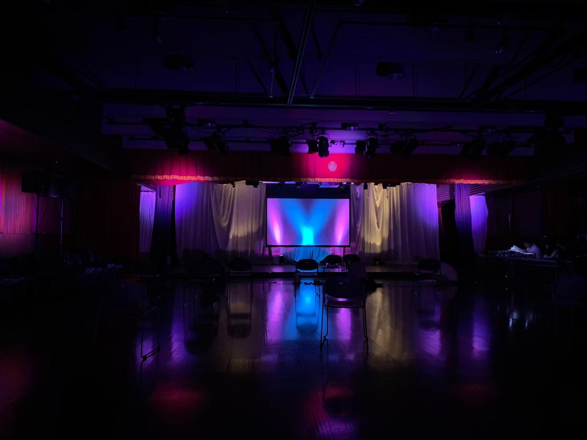
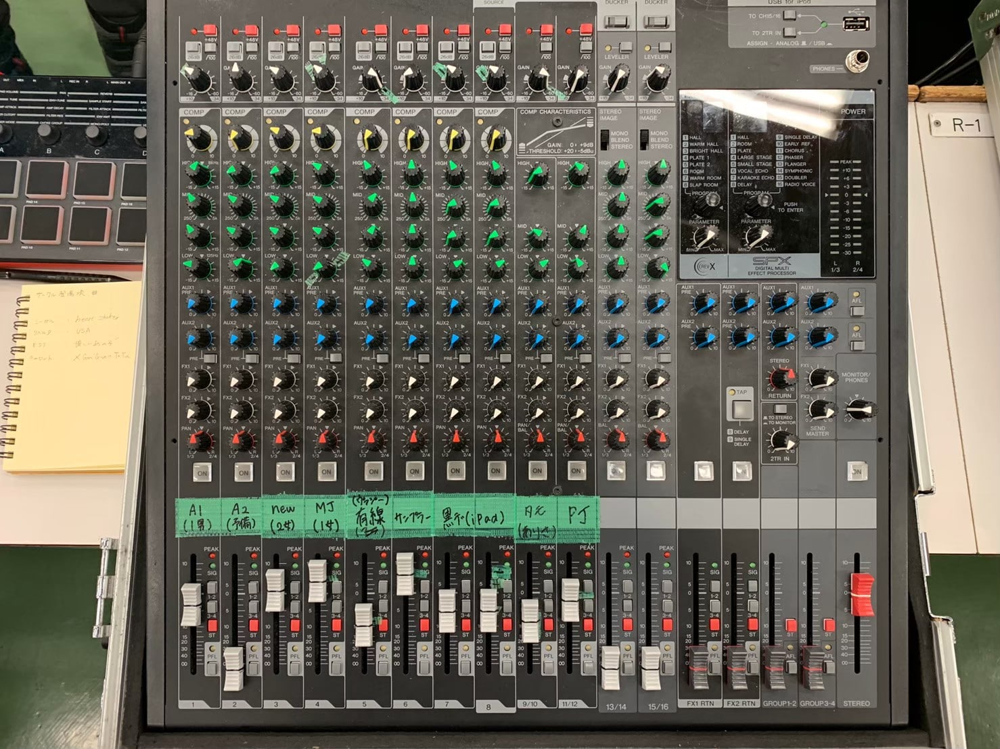
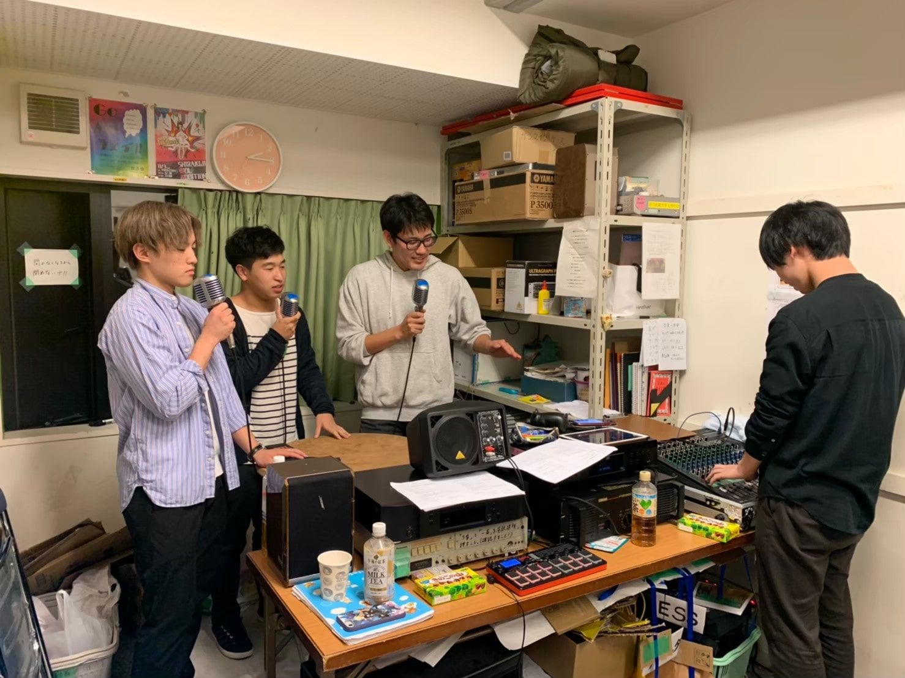

-
大学１〜４年｜様々なメディア
その他の活動
- 
- 
- 
-
放送部を中心に、映像制作・ラジオ放送・イベントの照明・音響などのメディアコンテンツ制作をしました。
その他の活動
-
-
放送部での活動を中心に映像制作・ラジオ放送・イベントの照明・音響など、様々な媒体・ジャンルのメディア制作をしました。
それらの活動を大学入学時から時系列順に記載しています。
-
-
-
学内でのラジオ放送
時期：大学１〜２年
担当：放送音響・時間管理
所属していた放送部で昼休みに20分間の校内放送を行っており、ミキサー（音響）とタイムキーパー（時間管理）を担当しました。
ミキサーはマイクやBGMの音声を聴きやすいように管理し、会話の流れに合わせて曲の切り替えをします。 タイムキーパーは20分間に収まるように、パーソナリティの会話や曲の時間を調整します。
どちらも正確で臨機応変な対応が求められる役割だったため、この経験が後の放送・イベントに関わる活動に繋がりました。
-
-
-
部内イベントの照明演出
時期：大学１年
担当：舞台照明の企画・実演
放送部の映像発表会で照明演出の企画・実演をしました。
会全体が一貫したストーリーのある物語となっており、映像作品の上映とナレーション・寸劇が織り交ぜられた構成になっていました。 舞台照明は映像の転換や物語の進行を彩る演出として用いられました。
私は照明班のリーダーとして班内の意見の取りまとめや、発表会のリーダー・他の班と演出についての協議をしました。
当時の発表会のコンセプトが「警察の捜査会議」だったため、パトライトで使われる赤・青を用い、捜査の緊迫感を想起させるような変化の激しい演出を考えました。
-
-
-
学園祭での音響
時期：大学２年
担当：イベント音響
学園祭の中で開催されたイベントの音響を担当しました。
出演者の声質や機材の特性に合わせて、一つひとつ細かな音声管理を行いました。 出演者とBGMとの音量バランスや曲を流すタイミングを何度も確認し、イベント全体を通して観客に違和感を与えない音響を徹底しました。
準備では音響班のリーダーとして、班員や後輩部員へ機材操作のコツや改善点のアドバイスを伝え、不安なくイベント運営に参加できる雰囲気作りに努めました。
-
-
-
個人での映像制作
時期：大学１〜３年
担当：企画・編集
ソフト：iMovie・Adobe Premiere Pro・Adobe After Effect
大学入学時から現在にかけて、ゼミや放送部などで映像制作に取り組みました。
iMovieを使用した簡単なスライドショー編集から始め、徐々にiMovieとAdobe Premiere Proを使い分けて、それぞれの特性を活かした編集作業ができるようになりました。
また、２年頃からコマ割りや切り替えのエフェクトなども意識し、色々な手法を試したことでアイデアが増え、制作の幅も広がりました。
-
-
-
オンラインでのラジオ制作
３年次はコロナ禍で放送部の校内放送が出来なかったため、ラジオを映像にまとめてYouTubeで発信しました。 月曜日から金曜日の５つのチームで各１０本、全体で計５０本の放送を制作・公開しました。
私は放送の企画と音声・映像の編集を担当しました。 音声だけの校内放送とは異なり画があるので、会話の内容を補足して、より分かりやすく伝える映像を意識しました。
-
-
-
ラジオドラマの制作
ラジオドラマを制作し、FMひがしくるめ内の番組「武蔵大学放送会のよるほー！」で放送しました。
ニュースキャスターとして働くアナウンサーを主人公に、自分の夢や目標と向き合うことや、立場・責任のある中で自分の気持ち・意見を表現することの難しさを描きました。
コロナ禍の閉塞的な社会や就職活動を間近に控えている自身の状況を相まって、自己を振り返ることのできる作品になったと感じています。
-